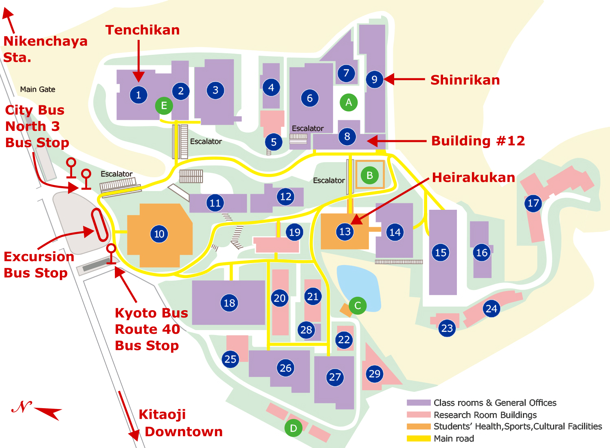

Campus Map
2D Map

Details (name of buildings/squares, location of shops, etc.)
1
Tenchikan
(2F: Conference, Coffee Break (Sep.8-11))
(1F: FamilyMart (Convenience Store),
Maruzen (Stationery))
2
Banyukan
3
Building #10
4
Honkan
5
Koyama Astronomical Observatory
6
Sagittarius-kan
7
Yuhikan
(1F: Ascella (Book Store))
8
Building #12
(5F: Conference (Sep.12))
9
Shinrikan
(4F: Conference, Coffee Break (Sep.12))
(1F: Sukiya (Restaurant) )
10
Koyama Hall
11
Building #4
12
Building #13
13
Heirakukan
(1F: Ichibariki (Ramen Restaurant))
14
Building #6
15
Building #5
16
Building #11
17
Research Rooms #1
18
Central Library
19
Laboratory Building #2
20
Research Rooms #2
21
Laboratory Building #1
22
Building #9
23
Research Rooms #3
24
Research Rooms #4
25
Research Rooms #5
26
Building #15
27
Building #14
28
Building #16
29
Research Rooms #6
| A | Pilotis |
|---|---|
| B | Wood deck |
| C | Tea-ceremony Room |
| D | Greenhouse |
| E | Oyanehiroba (square with big roof) |
3D Map (based on Google Earth)